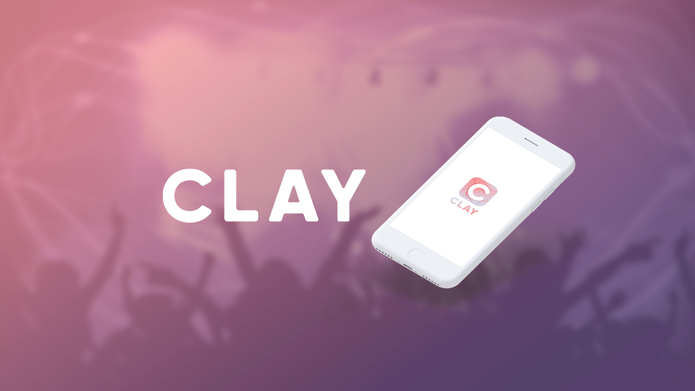
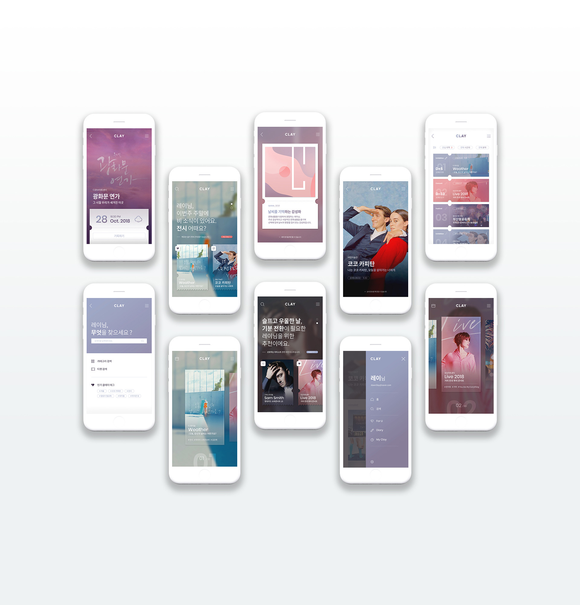

APP Design & Publishing
Colourful Play, CLAY!
- Duration September - November 2018
- Team Yoon Dahye (Team Leader), Park Seojeong, Kim Jungeun
- My Role Research & Ideation (50%), App Design (70%), Publishing (100%)
- Link View Site

-
2018 Trend Work & Life Balance, 당신의 일상과 문화생활에는 어떠한 변화가 있었나요?
워라밸(Work & Life Balance) 인식의 확산과 주 52시간 근무제 시행 이후 그 변화를 살펴보고자 경제적 기반을 갖춘 20대 이상의 남녀 100명을 대상으로 온라인 설문조사를 진행하였다. 그 결과 문화생활을 즐기려는 인식은 약 82.7% 증가하였으나, 한 가지 특정 분야에 지나치게 치중되어 있으며 노력과 기대에 비해 낮은 만족도를 나타내는 문제점을 도출할 수 있었다. 대부분의 대상자가 주로 포털 사이트 검색과 SNS를 통해 문화생활 정보를 얻고 있는데 이 과정에서 낮은 신뢰도를 보이는 동시에 다른 사람의 의견을 무의식적으로 수용한다는 점을 인지하고 있는 것으로 보아, 자신의 취향을 파악하기보다 타인의 평가와 취향을 따르는 것이 빠르고 편안한 방법이라고 판단하며 결과적으로는 낮은 만족도로 나타날 수 밖에 없는 것이라고 볼 수 있다.
-
Colourful Day, Colourful Play! CLAY
CLAY는 다양하고 넓고 컬러풀한 일상을 위한 나만의 문화생활 공간을 제공하고자 한다. 개인 맞춤 문화생활 추천, 내 마음대로 만드는 문화생활 리스트, 문화생활 경험 및 감정 기록, 나만의 문화생활 유형 분석 등 CLAY의 맞춤 추천 서비스는 어떤 것을 경험했는지를 기반으로 한 단순 필터링이 아닌 언제 경험했는지 혹은 어떻게 경험했는지 등 사용자의 경험과 감정을 기반으로 하여 내 취향에 꼭 맞는 문화생활을 가능하게 한다.


